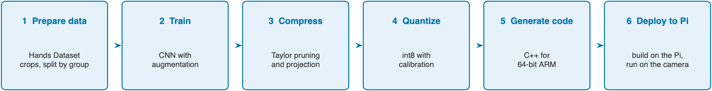
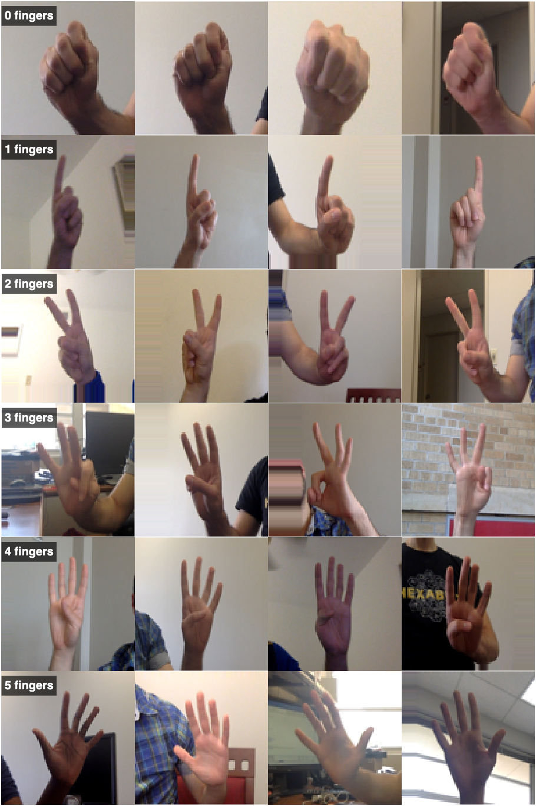
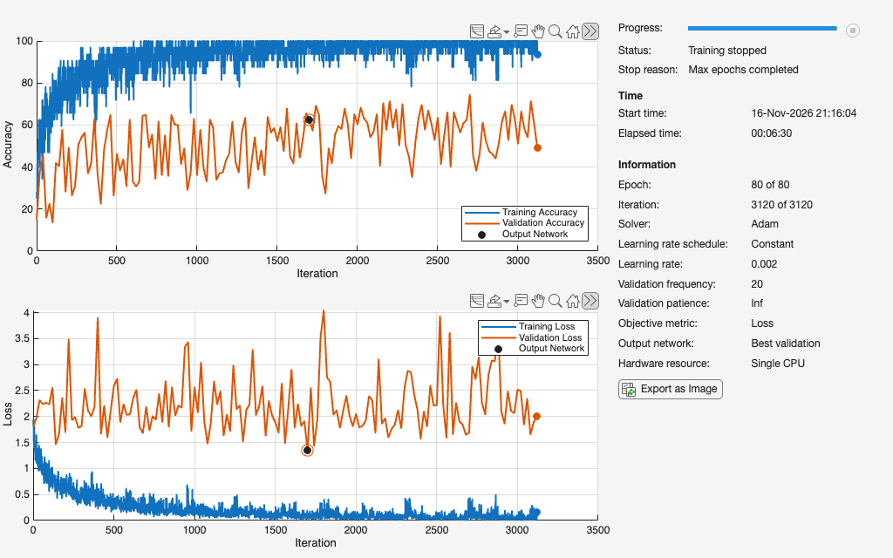
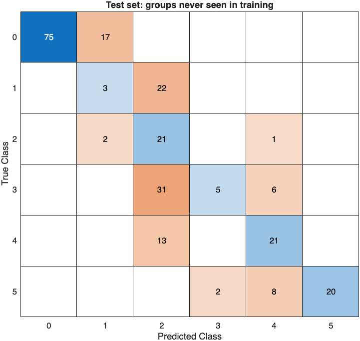
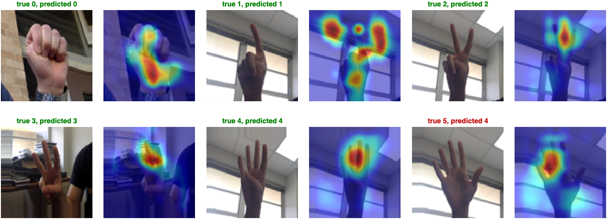
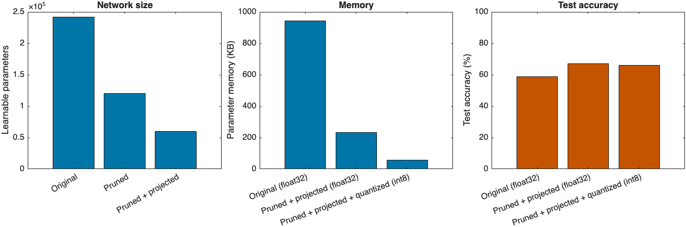
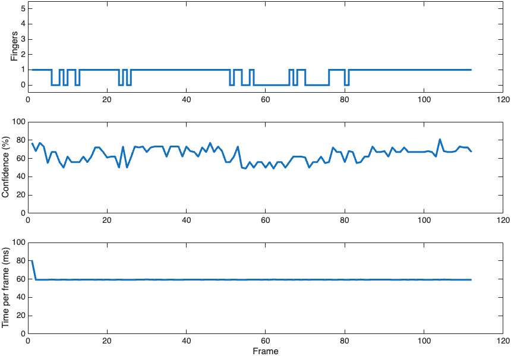

MATLAB R2026b · Embedded AI tutorial 3
Count Fingers with a Raspberry Pi 5 Camera Using a Network Trained in MATLAB
This example shows how to train, compress, and deploy an image classifier from MATLAB® to a Raspberry Pi® 5. The camera sees a hand, and the Pi reports how many fingers are held up, from 0 to 5. The network runs on the Pi as generated C++ code, with no MATLAB on the board.
The first two tutorials ran on a microcontroller and read a motion sensor. This one moves to a larger board and to images, and it uses the Raspberry Pi tools of MATLAB end to end: raspi to connect to the board, cameraboard to read the camera, and codegen to build the program on the Pi. The task is a simple one on purpose, so that the workflow is the focus: the model is small and the accuracy is modest, and the example is honest about why.

- Prepare Data: download the Hands Dataset, cut out the hands, and split by recording group (
Part1_PrepareData.m). - Train the Network: train a small CNN with image augmentation, test it, and look at it with Grad-CAM (
Part2_TrainNetworks.m). - Compress: Taylor pruning and projection, each followed by fine-tuning (
Part3_CompressClassifier.m). - Quantize: convert the network to 8-bit integers (
Part4_QuantizeNetwork.m). - Generate Code: generate C++ code and verify it against MATLAB (
Part5_GenerateCode.m). - Deploy and Run: build the program on the Pi and run it on the camera (
Part6_DeployToRaspberryPi.m).
Products: Deep Learning Toolbox, Deep Learning Toolbox Model Compression Library, MATLAB Coder, MATLAB Coder Interface for Deep Learning, Embedded Coder, Statistics and Machine Learning Toolbox, and the Raspberry Pi Blockset (from the Add-On Explorer).
Hardware: Raspberry Pi 5 with Raspberry Pi OS or Debian 13 (64-bit), a Raspberry Pi Camera Module, and a network connection between the Pi and your computer. The first connection installs a small MATLAB server on the Pi and may ask you to install some Linux packages with raspisetup.
1Prepare Data
Get the Dataset
The training photos come from the Hands Dataset (Apache License 2.0): about 1,550 webcam photos of 800 × 600 pixels, taken in different rooms. Each photo has one or more rectangles around hands, and each rectangle is labeled with the number of open fingers. The photos show a person's face, so they are not part of the tutorial repository. downloadHandsDataset downloads them from GitHub (about 430 MB) the first time.
rawFolder = fullfile(projectFolder,"data","raw");
datasetFolder = downloadHandsDataset(rawFolder);
labelsTable = [readtable(fullfile(datasetFolder,"data","train_labels.csv")); ...
readtable(fullfile(datasetFolder,"data","test_labels.csv"))];
labelsTable.Fingers = categorical(extractBefore(string(labelsTable.class),"-"));
numHands = height(labelsTable)
countsPerClass = countcats(labelsTable.Fingers)'numHands =
1730
countsPerClass =
503 232 221 225 210 339
There are 1,730 labeled hands in 1,557 photos. The classes are not balanced: there are twice as many fists (0 fingers) as hands with 1 to 4 fingers.
Cut Out the Hands
The dataset was made for object detection, but a classifier does not need to find the hand. cropHand makes each rectangle square, adds a 20% margin so that the fingertips are not cut off, and resizes it to 96 × 96 pixels.
outSize = 96;
X = zeros(outSize,outSize,3,numHands,"uint8");
for k = 1:numHands
img = imread(photoFile(labelsTable.filename{k}));
box = [labelsTable.xmin(k) labelsTable.ymin(k) labelsTable.xmax(k) labelsTable.ymax(k)];
X(:,:,:,k) = cropHand(img,box,outSize,0.2);
end
Split the Data by Group
The photo names start with a recording group, for example 996_pic00012.jpg. Photos of one group show the same room, the same light, and the same person, so they look alike. If photos of one group were in both the training and the test set, the test would be too easy. Instead, whole groups go to one set, which gives an honest estimate of how the model behaves in a new room.
About 100 photos of 5 fingers have names without a group (pic00005.jpg or Hand_0000026.jpg). They come from a different source, so they get their own group, other, and stay in the training set.
group = extractBefore(string(labelsTable.filename),"_pic");
group(ismissing(group)) = "other";
isTest = ismember(group,["996" "5"]);
isVal = ismember(group,["26" "3_1528505750.77" "15"]);
isTrain = ~isTest & ~isVal;fingers_0 fingers_1 fingers_2 fingers_3 fingers_4 fingers_5 Training 314 184 172 153 142 291 Validation 97 23 25 30 34 18 Test 92 25 24 42 34 30
Every set contains all six classes: 1,256 hands for training, 227 for validation, and 247 for testing. Two things to keep in mind. The validation and test sets are small, and they contain many more fists than other hands, so the accuracy per class will be shaky. And all hands in the other group are 5-finger hands, a shortcut a network could learn: "this photo style means 5".
2Train the Network
Define the Network
The network has four convolution blocks. Each one finds simple patterns (edges, then finger shapes), and each pooling layer halves the width and height. Global average pooling collapses the last feature maps, so the prediction does not depend on exactly where in the image the hand is. Dropout randomly switches off some neurons during training, which helps when there are only about 1,200 training images.
layers = [
imageInputLayer([96 96 3],Normalization="none")
convolution2dLayer(3,32,Padding="same")
batchNormalizationLayer
reluLayer
maxPooling2dLayer(2,Stride=2)
convolution2dLayer(3,64,Padding="same")
batchNormalizationLayer
reluLayer
maxPooling2dLayer(2,Stride=2)
convolution2dLayer(3,128,Padding="same")
batchNormalizationLayer
reluLayer
maxPooling2dLayer(2,Stride=2)
convolution2dLayer(3,128,Padding="same")
batchNormalizationLayer
reluLayer
globalAveragePooling2dLayer
dropoutLayer(0.3)
fullyConnectedLayer(6)
softmaxLayer];Augment and Train
A photo of a hand in a new room differs from the training photos: the hand is a little rotated, closer, or off-center. Random rotation, scaling, and shifting of the training images teach the network to cope with this. Mirroring is left out, because it did not help in our tests.
augmenter = imageDataAugmenter(RandRotation=[-15 15],RandScale=[0.9 1.1], ...
RandXTranslation=[-8 8],RandYTranslation=[-8 8]);
dsTrain = augmentedImageDatastore([96 96 3],XTrain,labelsTrain,DataAugmentation=augmenter);
options = trainingOptions("adam",MaxEpochs=80,MiniBatchSize=32,InitialLearnRate=2e-3, ...
ValidationData={XVal,labelsVal},ValidationFrequency=20,Metrics="accuracy", ...
Shuffle="every-epoch",OutputNetwork="best-validation",Plots="training-progress");
[net,info] = trainnet(dsTrain,layers,"crossentropy",options);MATLAB opens the training-progress window while trainnet runs. On a laptop CPU, the 80 epochs take a few minutes.

This is the most important figure of the example. The network learns the training photos almost perfectly, but it is judged on recording groups it has never seen, and there it is unsteady. The validation set is small and its hands are different from the training hands, so the curve is noisy. OutputNetwork="best-validation" returns the network from the check with the lowest validation loss (the black dot), not the last one. Even then, a second run with the same seed gave a different network, so treat any single accuracy number with care.
Test the Network
accuracyTest = testnet(net,XTest,labelsTest,"accuracy")
predicted = onehotdecode(minibatchpredict(net,XTest),classNames,2);
confusionchart(labelsTest,predicted)accuracyTest = 58.7045 accuracyVal = 65.6388 Accuracy of each class on the test set (%): fingers_0 fingers_1 fingers_2 fingers_3 fingers_4 fingers_5 81.5 12.0 87.5 11.9 61.8 66.7

The test accuracy is 58.7%, with a very uneven result for each class. The test set has only 247 hands from two recording groups, and the same network trained with another random seed scored anywhere between about 40% and 70%. A small dataset gives an unstable estimate. Part 6 tests the model on the Pi's own camera, which matters more.
See What the Network Looks At
Grad-CAM highlights the pixels that raised the score of the predicted class. If the network has learned to count fingers, the bright areas should lie on the fingers.
map = gradCAM(net,XTest(:,:,:,idx),predicted(idx));
3Compress
A Raspberry Pi 5 has plenty of memory, but a smaller network still loads faster, uses less memory bandwidth, and runs faster. Two steps make the network smaller: Taylor pruning removes the convolution filters that matter least, and projection replaces each layer with two smaller layers that keep its principal directions. Each step is followed by fine-tuning.
[netPruned,infoPruned] = compressNetworkUsingTaylorPruning(net,XTrain,labelsTrain,"crossentropy",optionsPruning, ...
LearnablesReductionGoal=0.5,LearnablesReductionIncrement=0.05);
netPruned = trainnet(dsTrain,netPruned,"crossentropy",optionsFineTune);
[netProjected,infoProjected] = compressNetworkUsingProjection(netPruned,XTrain,LearnablesReductionGoal=0.5);
netProjected = trainnet(dsTrain,netProjected,"crossentropy",optionsFineTune);Compressed network has 50.2% fewer learnable parameters.
Compressed network has 50.3% fewer learnable parameters.
Stage Learnables Memory (KB) Test accuracy (%)
__________________ __________ ___________ _________________
Original 241610 943.77 58.70
Pruned 120180 469.47 80.57
Pruned + projected 59496 232.41 67.21
The network now needs about a quarter of the parameter memory. Do not read too much into the accuracy column: the test set is small, and fine-tuning is also extra training, so a compressed network can even score higher than the original, as the pruned network does here.
4Quantize
Quantization stores the weights and activations as 8-bit integers instead of 32-bit floating-point numbers. A calibration step runs training images through the network to find the range of values in every layer.
quantObj = dlquantizer(netCompressed,ExecutionEnvironment="MATLAB");
prepareNetwork(quantObj);
calibrate(quantObj,augmentedImageDatastore([96 96 3],XTrain(:,:,:,1:3:end)));
netQ = quantize(quantObj,ExponentScheme="histogram"); Stage Learnables Parameter memory (KB) Test accuracy (%)
Original (float32) 241610 943.77 58.70
Pruned + projected (float32) 59496 232.41 67.21
Pruned + projected + quantized (int8) 57832 57.78 65.99
agreement = 91.9028 % % of test hands where the int8 and float32 networks give the same answer

5Generate Code
The Raspberry Pi does not run MATLAB. MATLAB Coder translates a MATLAB function, together with the quantized network, into C++ code that the Pi compiles and runs on its own. Code generation starts from one function, fingerCountDetect. It takes a 480 × 640 camera frame, prepares it with preprocessFrame (the same function that prepared the training images), runs the network, and returns the number of fingers and the six probabilities.
function [count,probabilities] = fingerCountDetect(frame) %#codegen
persistent net
if isempty(net)
net = coder.loadDeepLearningNetwork("models/netQ.mat");
end
x = preprocessFrame(frame); % 96 x 96 x 3, values 0 to 1
probabilities = extractdata(predict(net,dlarray(x,"SSCB")));
[~,k] = max(probabilities);
count = int32(k - 1);
endThe input is labeled "SSCB" (spatial, spatial, channel, batch): code generation for quantized pooling layers requires the batch dimension, even for a single image. preprocessFrame keeps the centered 480 × 480 square of the frame and averages 5 × 5 blocks to get 96 × 96 pixels, using only basic array operations, so MATLAB and the Pi prepare the images in exactly the same way.
Before generating code for the Pi, build a MEX function with the same deep learning settings, and compare it with MATLAB on all 247 test hands. To test the complete function, each 96 × 96 crop is enlarged five times and placed in the center of an empty 480 × 640 frame, which preprocessFrame turns back into the original crop.
mexCfg = coder.config("mex");
mexCfg.DeepLearningConfig = coder.DeepLearningConfig(TargetLibrary="none");
mexCfg.LargeConstantGeneration = "KeepInSourceFiles";
codegen -config mexCfg fingerCountDetect -args {zeros(480,640,3,"uint8")} -o fingerCountDetect_mexcountAgreement = 1 medianRelativeDifference = 0
Every count matches, and the probabilities are identical. Then generate the C++ library for a 64-bit ARM processor. TargetLibrary="none" produces plain C++ without third-party libraries, and LargeConstantGeneration="KeepInSourceFiles" puts the network weights in the source files.
cfg = coder.config("lib");
cfg.TargetLang = "C++";
cfg.GenCodeOnly = true;
cfg.DeepLearningConfig = coder.DeepLearningConfig(TargetLibrary="none");
cfg.LargeConstantGeneration = "KeepInSourceFiles";
cfg.HardwareImplementation.ProdHWDeviceType = "ARM Compatible->ARM 64-bit (LP64)";
codegen -config cfg fingerCountDetect -args {zeros(480,640,3,"uint8")} -d codegen/lib -reportextern void fingerCountDetect(const unsigned char frame[921600], int *count,
float probabilities[6]);6Deploy and Run
Connect to the Raspberry Pi
Install the Raspberry Pi Blockset from the Add-On Explorer. Define the connection details in the Command Window, so that your password is never saved in a script, and connect with raspi.
piAddress = "raspberrypi.local";
piUser = "pi";
piPassword = "..."; % type your password in the Command Window only
r = raspi(piAddress,piUser,piPassword)raspi with properties:
BoardName: 'Raspberry Pi 5 Model'
Port: 18734
AvailableLEDs: {'ACT'}
...
Check the Camera View
The network sees the centered square of the camera frame, so hold your hand inside it, with the fingers spread out and clearly visible, the way the hands in the training photos were.
cam = cameraboard(r,"Resolution","640x480");
frame = snapshot(cam);
imshow(frame)
rectangle(Position=[81 1 480 480],EdgeColor="g",LineWidth=3)
clear cam % the camera can be used by only one program at a timeBuild the Program on the Pi
fingerCounterApp is the program for the Pi. It creates the camera, then grabs frame after frame and calls fingerCountDetect on each, until it is stopped.
function fingerCounterApp() %#codegen
r = raspi;
cam = cameraboard(r,"Resolution","640x480");
k = int32(0);
while true
k = k + 1;
frame = snapshot(cam);
t0 = tic;
[count,probabilities] = fingerCountDetect(frame);
ms = toc(t0)*1000;
fprintf("frame %2d: %d fingers (confidence %3.0f%%, %5.1f ms)\n",k,count,100*max(probabilities),ms);
end
endConfigure code generation for a stand-alone program on a 64-bit Raspberry Pi. MATLAB generates the C++ code on your computer, copies it to the Pi, and builds it there with the compiler on the Pi. The board type must match the operating system: Raspberry Pi (64bit) for a 64-bit system, and Raspberry Pi for a 32-bit system. MATLAB warns that the program does not end: that is intended.
hw = coder.hardware("Raspberry Pi (64bit)");
hw.DeviceAddress = r.DeviceAddress; hw.Username = piUser; hw.Password = piPassword;
hw.BuildDir = "/home/" + piUser + "/MATLAB_ws/fingercounter";
cfg = coder.config("exe");
cfg.Hardware = hw;
cfg.GenerateExampleMain = "GenerateCodeAndCompile";
cfg.DeepLearningConfig = coder.DeepLearningConfig(TargetLibrary="none");
cfg.LargeConstantGeneration = "KeepInSourceFiles";
codegen -config cfg fingerCounterApp -d codegen/pi -reportRun It on the Camera
Start the program on the board for 20 seconds. Hold up your hand in front of the camera and change the number of fingers every few seconds. The timeout command stops the program, and stdbuf -oL sends each line as soon as it is printed.
program = strtrim(string(system(r,"find /home/" + piUser + "/MATLAB_ws/fingercounter -name fingerCounterApp.elf | head -1")));
output = system(r,"cd '" + fileparts(program) + "' && stdbuf -oL timeout 20 ./fingerCounterApp.elf 2>/dev/null; true");
disp(output)frame 1: 1 fingers (confidence 96%, 60.1 ms) frame 2: 1 fingers (confidence 97%, 59.3 ms) frame 3: 1 fingers (confidence 96%, 59.5 ms) ... frame 40: 0 fingers (confidence 49%, 59.4 ms)

The network and the preparation of the frame take about 60 ms per frame on the Pi 5. About 15 frames per second go through the whole loop, including the camera.
To use it live without a time limit, open a terminal on your computer, log in to the Pi with ssh, go to the program folder, and start ./fingerCounterApp.elf 2>/dev/null. Each line appears while the program runs, and Ctrl+C stops it.
Check the Pi Against MATLAB and Measure the Program
Take a picture with MATLAB and run the MEX function from Step 5 on it: for the same scene, the result agrees with the Pi program. The program is small, and it uses little memory:
programKB = str2double(system(r,"stat -L -c %s '" + program + "'"))/1024
peakMemory = system(r,"cd '" + fileparts(program) + "' && (./fingerCounterApp.elf >/dev/null 2>&1 & pid=$!; sleep 2; grep VmHWM /proc/$pid/status; wait $pid)")programKB = 226.8594 peakMemory = VmHWM: 50656 kB
Read these results with care. There is no "no hand" class: the network always answers with a number from 0 to 5, and it can be confident about it even when the camera sees only the ceiling, as in the run above. The network was trained on tight crops around a hand, so it works best when the hand fills most of the green square. And the accuracy of 59–67% on held-out recording groups says that a new camera, a new room, and your own hand can make it worse or better: try 0 to 5 fingers and count how often it is right.
Next Steps
- Record your own images with the Pi camera.
captureFingerSessionin thehelpersfolder counts you down and saves images for each finger count throughcameraboard. Record several sessions with different light, backgrounds, and hands, add them to Part 1, and train again: data from the camera that runs the model is the most reliable fix for the instability above. - Add a "no hand" class with photos of empty scenes, so that the network can say "nothing".
- Use transfer learning from a pretrained network such as MobileNet-v2 (a support package in the Add-On Explorer), which needs far fewer images to reach a stable accuracy.
- Collect a hand-only test: test the model on sessions that were not used for training, and report the accuracy of each class, not only one number.
See Also
raspi · cameraboard · trainnet · testnet · imageDataAugmenter · gradCAM · compressNetworkUsingTaylorPruning · compressNetworkUsingProjection · dlquantizer · estimateNetworkMetrics · codegen · coder.hardware · coder.loadDeepLearningNetwork